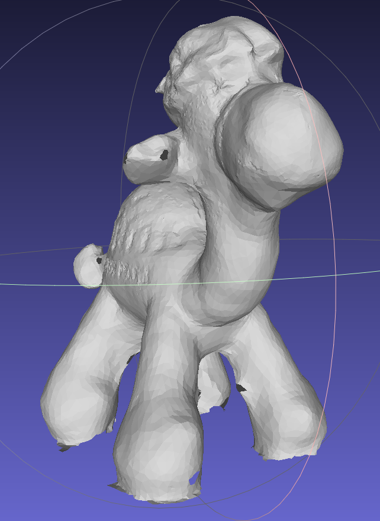
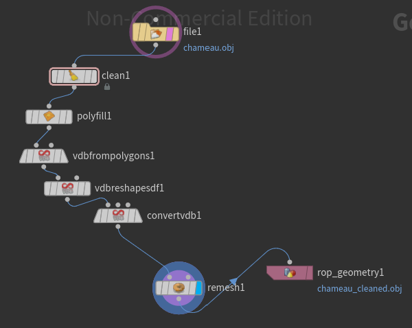
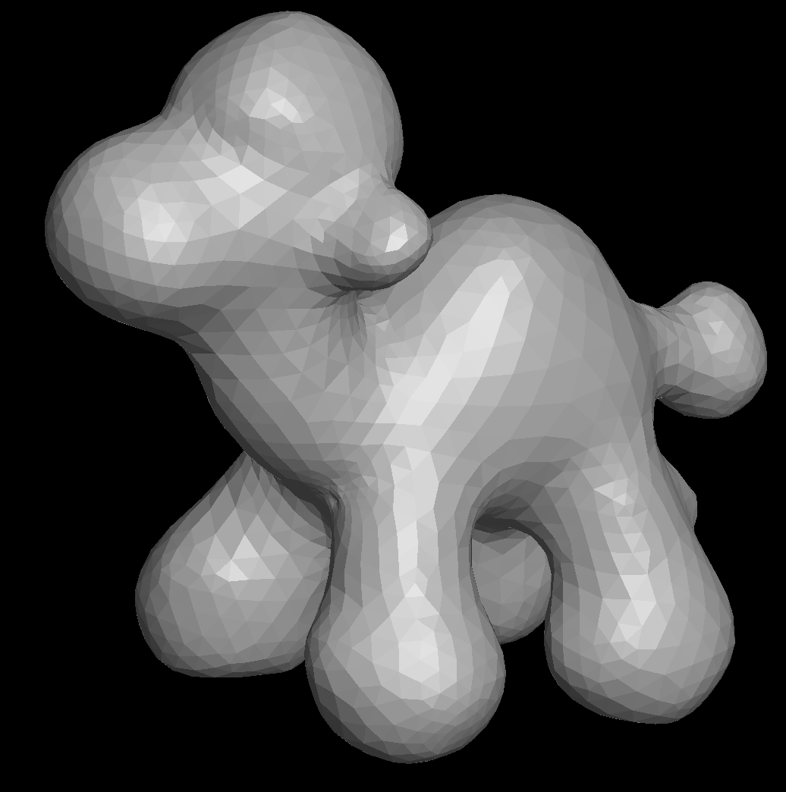
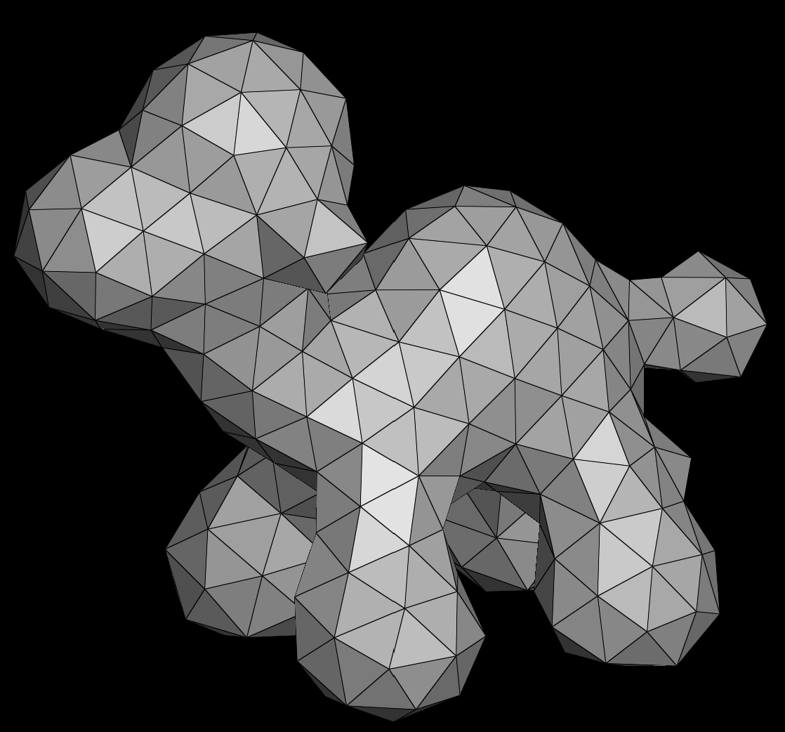
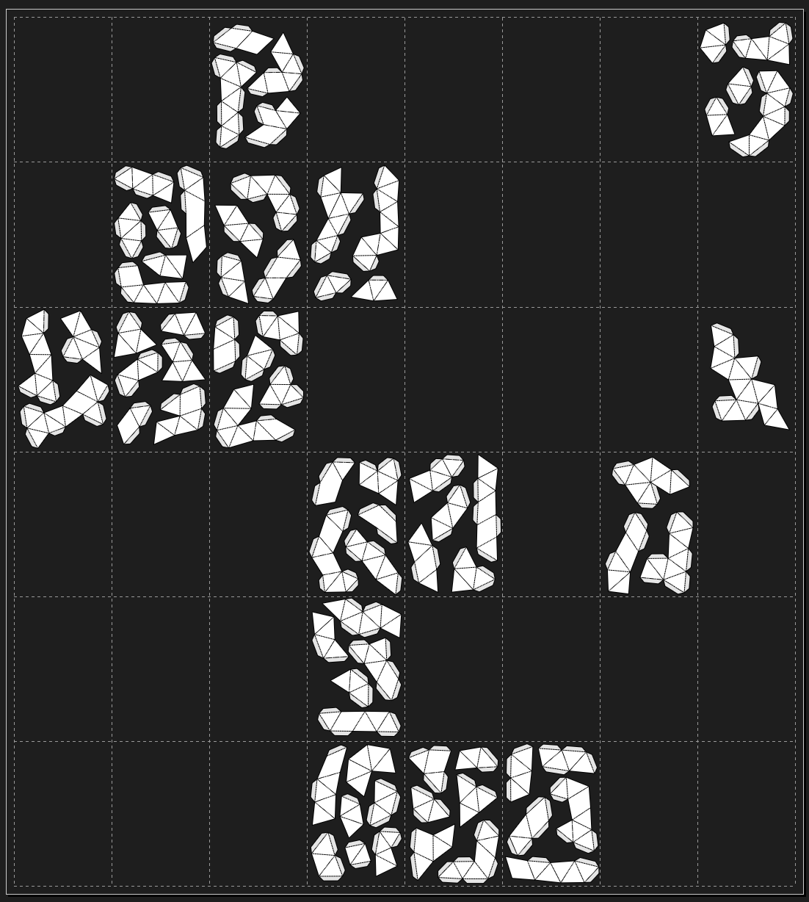
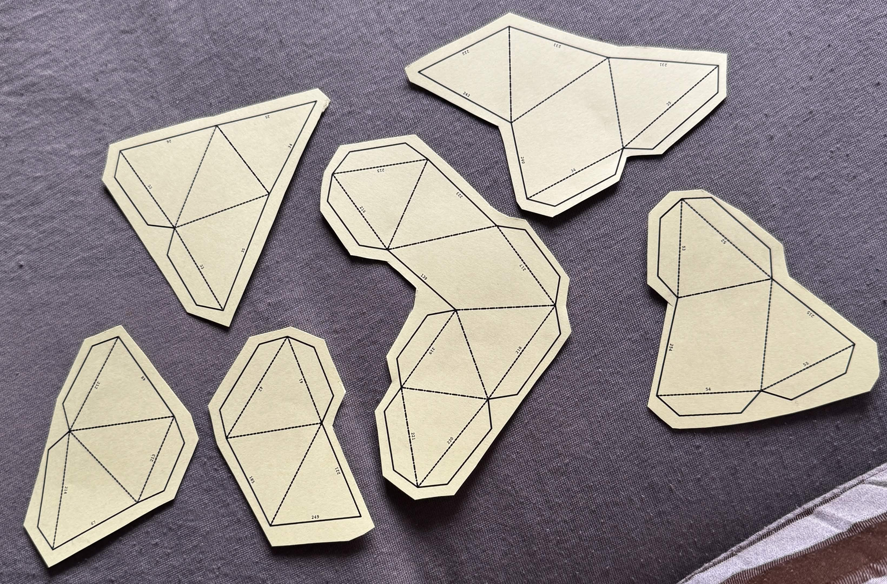
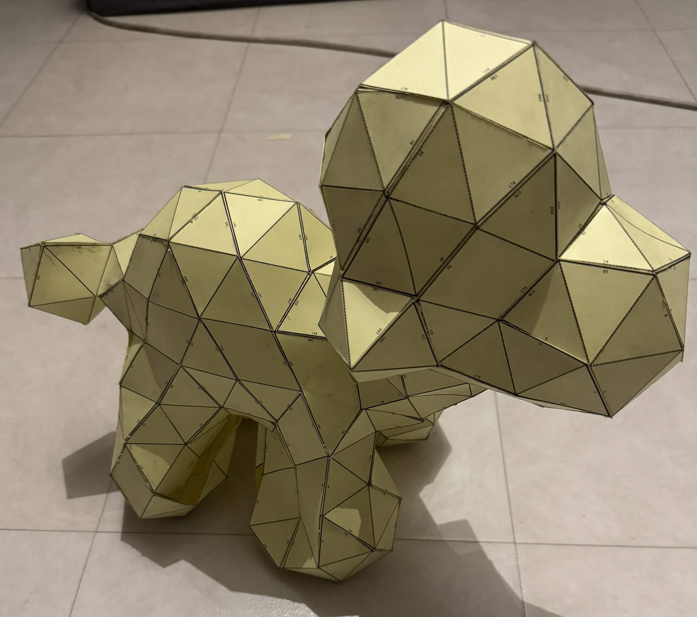

Capture de l'Objet Réel
Utilisez l'application Abound 3D pour effectuer un scan complet de la peluche. Prenez des photos à 360° pour générer le maillage brut.

Nettoyage & Réparation
Passez par Meshlab pour supprimer les artefacts, puis par Houdini pour boucher les trous (workflow VDB).

Triangulation (Low-Poly)
Réduisez le maillage dans Graphite pour obtenir un nombre de facettes pliables (environ 150 triangles).


Le Patron 2D
Dépliez le modèle dans Pepakura, répartissez les pièces et ajoutez les languettes.

Assemblage Final
Imprimez sur papier 180g, découpez et collez chaque facette avec soin.

